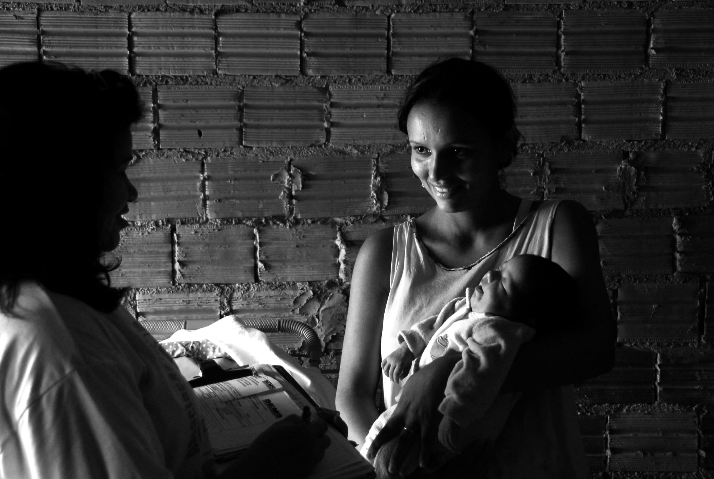
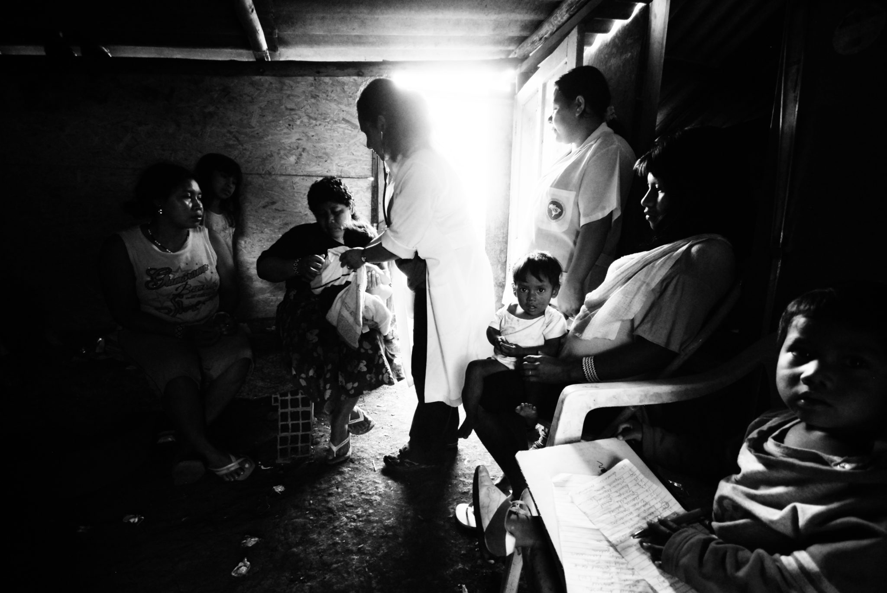
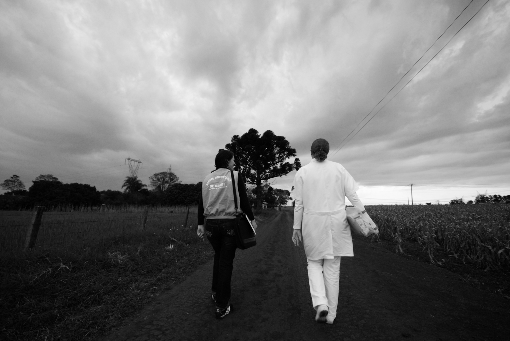
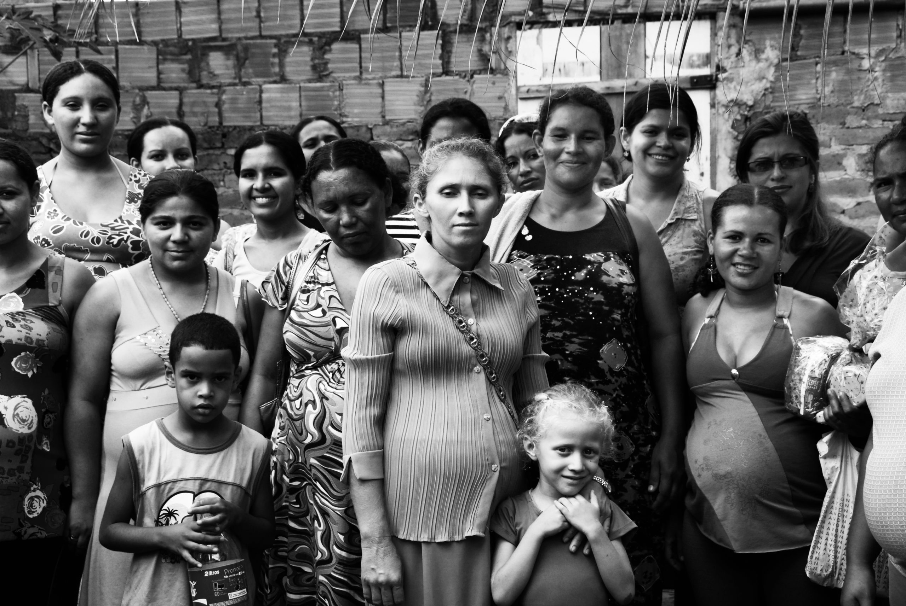

A parte invisível do trabalho é o que depois vira atestado.
Esse trabalho tem nome e quase sempre: mulher, e desproporcionalmente mulher negra.

QUEM ESCUTA E ACOLHE DENTRO DO SUS, sustenta a vida do outro há séculos.
ENTRE TÉCNICAS E AUXILIARES DE ENFERMAGEM, MAIS DE METADE SE AUTODECLARA NEGRA.
Entre assistentes sociais, quase metade também é negra. Da Agente Comunitária de Saúde, à Psicóloga, à Terapeuta Ocupacional, à Professora, à Doula, à Médica.
COFEN/FIOCRUZ, 2015 · CFESS, 2022

“
É um sonho para mim, de verdade, enquanto servidora pública, mas também como pessoa. Creio que através desse cuidado, vamos conseguir "resgatar" muitos colaboradores adoecidos.
Servidora Pública, mensagem real enviada à PAAPS

ELAS SUSTENTAM O TERRITÓRIO INTEIRO.
O trabalho delas só entra para os indicadores depois que custou uma licença.
O indicador da equipe só registra a meta batida. Entre quem trabalha formalmente, os afastamentos por esgotamento profissional multiplicaram por 9 em 4 anos.
NÓS PRECISAMOS CONHECER MELHOR E CUIDAR MELHOR DESSAS MULHERES QUE CUIDAM DE TUDO.

75%
do trabalho de cuidado não remunerado no mundo é feito por mulheres
O recém-lançado programa Acolhe Mais, atendimento psicológico online para Mães Atípicas ou Mulheres Vítimas de Violência, pelo SUS, nasce justamente porque hoje sabemos que: cuidar também adoece quem cuida.
OIT · Ministério da Saúde, Acolhe Mais, ago. 2026
O Acolhe Mais do SUS sabe que precisamos cuidar quem cuida. Mas não olhou para as mulheres do próprio SUS, que cuidam de tudo.
O presenteísmo em mulheres:
ir ao trabalho, mas adoecida ou exausta demais para dar o seu melhor. Ainda não tem indicador ou programa de cuidado.
A PAAPS É A REDE DE PSICÓLOGAS DAS SERVIDORAS PÚBLICASSAIBA MAIS EM WWW.PAAPS.COM.BR